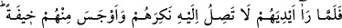
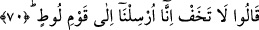
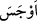
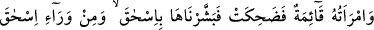
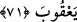

Mukatil der ki: “Malının büyük bir kısmı sığır cinsinden olduğu için elçilere bir
buzağı getirdi. Fakat elçilere yaklaşıp buzağıyı önlerine koyunca, ona ellerini
sürmediler.”
70. Ellerinin buzağıya uzanmadığını görünce, onları yadırgadı ve onlardan dolayı
içine bir korku düştü. “Korkma, biz Lût kavmine gönderildik.” dediler.
Buzağıyı yemek için “ellerinin buzağıya uzanmadığını” ellerini buzağıya
uzatmadıklarını “görünce, onları yadırgadı.” Bu davranışları hoşuna gitmedi;
buzağıdan yememelerinin, ondan uzak durmalarının sebebini anlayamadı “ve onlardan”
durumlarından “dolayı içine bir korku düştü.”
“
” idrak etti, hissetti demektir. Çünkü bu gelenlerin melek olduğunu, kendisinin
Allah’ın beğenmediği bir şeyi yaptığı için ya da kavmine azap etmek için geldiklerini
düşünüyordu.
et-Te’vîlâtü’n-Necmiyye’de şöyle denilir: “İbrahim (a.s.)’ın korkusu, kendisi için
korkma kabilinden bir beşerî korku değildi. Çünkü o mancınıkla ateşe atılırken bile
kendisi için korkmamış ve “âlemlerin Rabb’ine teslim oldum.” (el-Bakara, 2/131)
demişti. Onun korkusu, kavmine karşı duyduğu şefkat ve acıma hislerinden kaynaklanan
bir korkuydu. Şu ifade de buna delâlet eder:
“Korkma, biz” azap emriyle senin kavmine değil, sadece “Lût kavmine
gönderildik.” İçin rahat etsin. “dediler.”
Lût, ya Sâre’nin kardeşidir ya da İbrahim (a.s.)’ın yeğenidir.
71. O sırada hanımı ayakta idi ve (bu sözleri duyunca) güldü. Ona da İshak’ı,
İshak’ın ardından da Yakub’u müjdeledik.”
“O sırada hanımı” İbrahim (a.s.)’ın amcasının kızı olan Nahur oğlu Haran’ın kızı
Sâre, perdenin arkasında, yahut da elçilere hizmet için yanlarında konuşmalarını
duyacak şekilde “ayakta idi” Onların kadınları tıpkı bedevilerde ve çöl sakinlerinde
olduğu gibi erkeklerden sakınmazlardı. Açıklık kerih görülen bir şey değildi. Ayrıca
karısı ihtiyardı ve misafirlere hizmet etmek güzel ahlâk alâmeti sayılırdı.